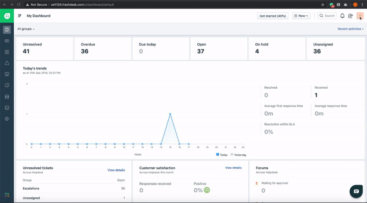
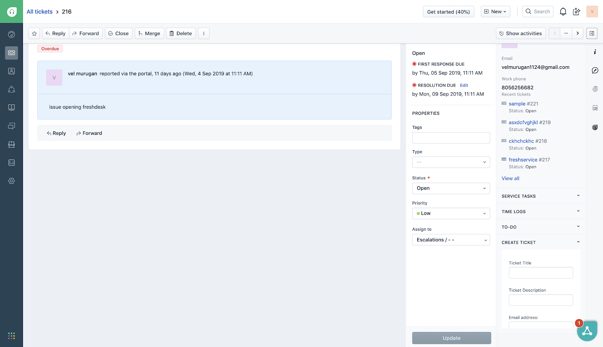
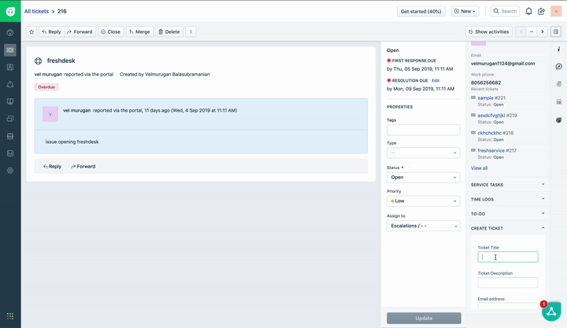

This tutorial focuses on creating an app that helps developers get accustomed to the advanced features of the Freshworks platform.
In this segment, we will develop an app that creates a ticket in Freshdesk based on user input.
Prerequisites:-
- You should have a trial Freshdesk account
- You should have an API key for a Freshdesk user. Refer the image below to obtain the API key

- You have gone through the previous tutorial (‘Introduction to Freshworks Developer platform')
- Clone the sample apps repository https://github.com/freshdesk/marketplace-sample-apps
- Navigate to the directory - Training/fundamentals/level1
cd Training/fundamentals/level1The app source code under the start folder is a skeleton on top of which the complete app will be built in the subsequent steps.
- We are building a sidebar app that shows a simple form with fields required for ticket creation. These fields include title, description, and email.
- Copy the following HTML snippet and paste it between the body tags in the template.html file. This snippet helps generate an HTML form to collect the user input for creating a ticket.
<!-- 1.1 Form HTML ! 🤘 -->
<div class="fw-widget-wrapper padding">
<form role="form" id='ticketForm'>
<div class="form-group">
<label for="title">Ticket Title</label>
<input type="title" class="form-control" required id="title">
</div>
<div class="form-group">
<label for="desc">Ticket Description</label>
<input type="desc" class="form-control" required id="desc">
</div>
<div class="form-group">
<label for="email">Email address</label>
<input type="email" class="form-control" required id="email">
</div>
</form>
<div class="col-md-4 text-center">
<button id="createTicket" class="btn btn-primary">Create Ticket</button>
</div>
</div>- Now that we have the UI in place, we need to write the logic. The logic here is a simple API call with the form inputs.
- Copy the
createFreshdeskTicket()function snippet and paste it in line 31 of the app.js file in the app
/**
* 1.2 Function to create a Freshdesk ticket ! 🤘
* @param {String} title Ticket title
* @param {String} description Ticket description
* @param {String} email email of the user that creates ticket
*/
function createFreshdeskTicket(title, description, email) {
client.request.post("https://<%=iparam.freshdesk_subdomain%>.freshdesk.com/api/v2/tickets", {
headers: {
Authorization: "Basic <%= encode(iparam.freshdesk_api_key)%>",
"Content-Type": "application/json;charset=utf-8"
},
body: JSON.stringify({
description: `${description}`,
email: `${email}`,
priority: 1,
status: 2,
subject: `${title}`
})
})
.then(function () {
showNotification('success', 'Ticket is successfully created');
//Clears user input after posting data
clearInputfields();
})
.catch(function (error) {
console.error(error);
showNotification('danger', 'Unable to create ticket');
});
}- The function uses the Request API feature to create a ticket in Freshdesk.
- Installation parameters (also known as iparams) are values that users configure when installing apps. You can define these parameters in the iparams.json file available in the config directory
- The app expects two installation parameters - an API key and a subdomain.
- In this case, the API key is secured using the secure property when defined as an iparam.
- Copy the following JSON into the iparams.json file
{
"freshdesk_api_key": {
"display_name": "Freshdesk API Key",
"description": "Please enter your Freshdesk API key. You can find it in the profile section page.",
"type": "text",
"required": true,
"secure": true
},
"freshdesk_subdomain": {
"display_name": "Freshdesk Sub-domain",
"description": "Please enter your Freshdesk sub-domain. It's in the URL, the name which appears before (.freshdesk.com) in the URL. For ex: In `xyz.freshdesk.com`, `xyz` is the subdomain",
"type": "text",
"required": true
}
}- Copy the following JSON and paste it in iparam_test_data.json
{
"freshdesk_api_key": "<YOUR_FRESHDESK_API_KEY>",
"freshdesk_subdomain": "<YOUR_FRESHDESK_SUBDOMAIN>"
}- Notice that we haven't hardcoded neither the subdomain nor the API key in
createFreshdeskTicket(). They will be substituted by the iparam values.
client.request.post("https://<%=iparam.freshdesk_subdomain%>.freshdesk.com/api/v2/tickets", {
headers: {
Authorization: "Basic <%= encode(iparam.freshdesk_api_key)%>",- Start the app by running the following command
fdk run- Open a freshdesk ticket details page and append ‘?dev=true' to the ticket URL (https://subdomain.freshdesk.com/helpdesk/tickets/1?dev=true.
- Allow the browser to load unsafe scripts on the top right corner of the address bar

- The app loads on right side of the ticket details page as per the specifications in the manifest.json file

- Open the app and enter the requested ticket details to create a new ticket

Congratulations! You've just completed your first advanced freshdesk app and learned about Request API, Interface API, and Installation Parameters
What's Next
Now that we have seen the essential features, let's understand other interesting features such as OAuth, Data storage and Instance API (Notifications, Modals, Dialogs)